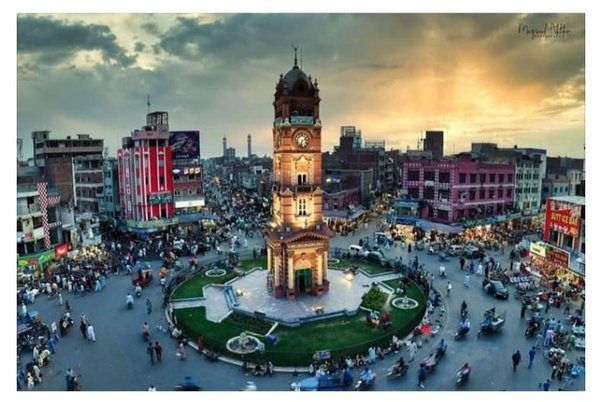

Pakistan
Faisalabad

- Advantages
- The city is well-known for its textile industry
- Faisalabad is also a major agricultural hub
- It is home to many universities, research institutions, and cultural centers.
- Disadvantage
- Despite good transportation facilities, traffic congestion can be a problem
- Faisalabad does have limited parks and other recreational facilities
- Poor air quality due to industry